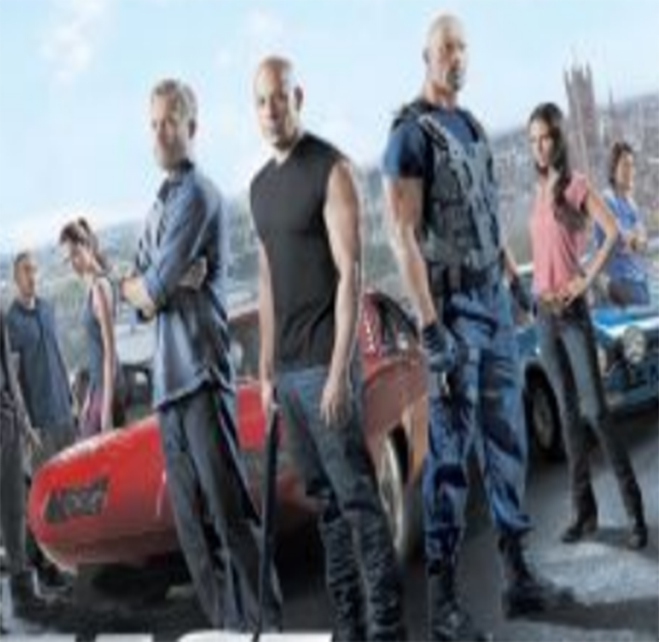

Directed by Justin Lin, it was released in 2013. The film continued with the main characters from the previous film and introduced more action scenes and complex plots. In the novel, Dominic Toretto and his team are caught up in an international criminal conspiracy that not only tests their loyalty and courage, but also challenges their moral boundaries.
The movie begins with Dominica and his team enjoying the freedom of a stolen $100 million. However, this quiet life is soon shattered when their former rival Hobbes (Dawn Johnson), now a federal agent, comes to them and asks them to help capture Owen Shaw (Luke Evans), an international crime boss. Shaw is a former special forces member specializing in high-tech theft, planning to build a device that would disable global communications.
Hobbes promised that if Dominica and his team helped capture Shaw, they would be granted full amnesty and could return safely to the United States. Fascinated by the temptation, Dominica assembled his team, including Bryan, Roman, Taj and others. Meanwhile, Dominica discovers that his lover, Letty, is still alive and appears to be connected to Shaw. In pursuit of Shaw, Dominica's team travels across London and several cities in Spain, not only confronting Shaw's team, but must also resolve internal emotional and moral conflicts. The climax of the film is a thrilling chase on the road where the team must use all their skills and courage to stop Shaw from carrying out his evil plan.
Fast & Furious 6 ends with the team successfully stopping Shaw, securing global communications, and bringing Letty back to Dominica. Hobbes fulfills his promise to grant pardons to his team members, who return to the United States, end their long exile, and set a new beginning for the next film in the series.